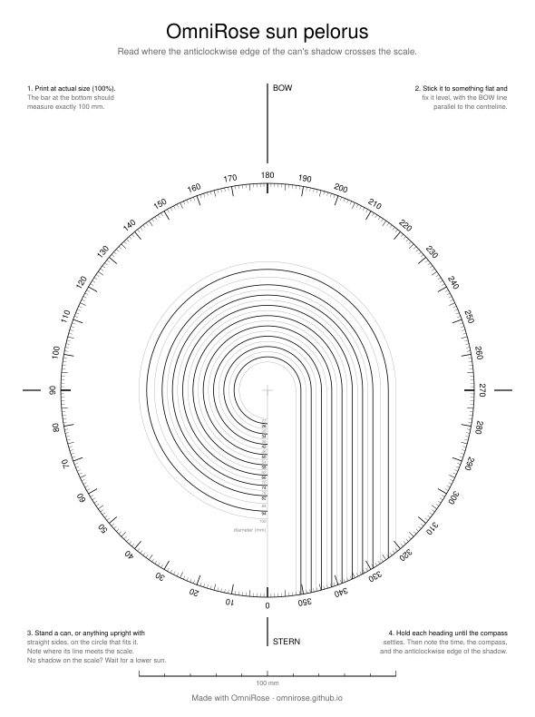
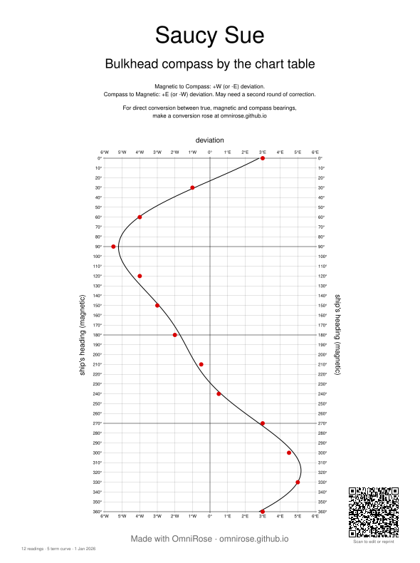

Your compass is fibbing. Just a little.
The engine, the electronics, even the tins of beans in the locker all tug at your boat's compass. OmniRose turns a few simple readings into a conversion rose: true, magnetic and your own compass on one card, so you go from any one to any other by reading straight across. No sums, no tables to look up twice.
Free and open source. No sign-up, no adverts, and your readings never leave your browser.

How it works
1Swing your compass
Point the boat at a few known headings and note how far the compass is off each time. It takes about an hour on a calm day. Here's how, or use the sun and a drinks can, no landmarks needed.
2Type in your readings
OmniRose fits a smooth curve through them and shows you the result straight away, with a nudge if a reading looks odd.
3Print, laminate, done
Download your conversion roses, and a classic deviation table if you like, as PDFs. Each one has a QR code that brings your readings back whenever you need a reprint.
Every heading, one card
A deviation table only tells you the compass's error. You still have to add or subtract it, then apply variation as well, and the sums go one way for true to compass and the other way back. A conversion rose does all of that on paper, for every heading at once.
Three rings sit one inside the other: magnetic on the outside, true in the middle and compass on the inside. They're lined up so the same direction is at the same angle on all three, with your variation and your compass's deviation built in. To convert, find the number you have and read across to the ring you want. No "add east or was it west?" at 3am. See how to use it.
Want to steer 045° true?
Find 45 on the green ring and read across: that's 047° magnetic and 050° on Saucy Sue's compass. Done.
That's where the name comes from: omni, every heading, every direction of conversion, on one rose. Print a page for each degree of variation you sail in.
No landmarks? Swing by the sun Experimental

To swing a compass you need to know which way the boat is really pointing. Usually that means lining up transits or finding a known bearing, and hoping for a helper on shore. Navigators have long checked their compass against the sun instead, and OmniRose makes that easy with nothing more than a printout.
Print the sun pelorus, stand a drinks can on it, and on each heading note the time, the compass and where the can's shadow falls. The sun's position is known exactly for any moment and place, so OmniRose works out your true heading and the deviation, straight into your rose. All you need is a clear sky and calm water, wherever you are.
It's new, so we'd love to hear how it goes: send feedback.
And a deviation table too

If you prefer the classic card for the chart table, you get that as well: your compass's error on every heading, drawn as a curve so you can read it at a glance. There's also a combined table with compass headings on the other side, which saves you a second round of correction. And a swing record of your readings to keep with them.
New to all this? Start with what deviation is and why it matters. It's less scary than it sounds, promise.